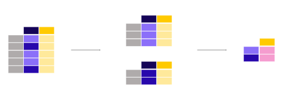

In [1]: import pandas as pd
- Titanic data
This tutorial uses the Titanic data set, stored as CSV. The data consists of the following data columns:
PassengerId: Id of every passenger.
Survived: This feature have value 0 and 1. 0 for not survived and 1 for survived.
Pclass: There are 3 classes: Class 1, Class 2 and Class 3.
Name: Name of passenger.
Sex: Gender of passenger.
Age: Age of passenger.
SibSp: Indication that passenger have siblings and spouse.
Parch: Whether a passenger is alone or have family.
Ticket: Ticket number of passenger.
Fare: Indicating the fare.
Cabin: The cabin of passenger.
Embarked: The embarked category.
In [2]: titanic = pd.read_csv("data/titanic.csv") In [3]: titanic.head() Out[3]: PassengerId Survived Pclass Name Sex ... Parch Ticket Fare Cabin Embarked 0 1 0 3 Braund, Mr. Owen Harris male ... 0 A/5 21171 7.2500 NaN S 1 2 1 1 Cumings, Mrs. John Bradley (Florence Briggs Th... female ... 0 PC 17599 71.2833 C85 C 2 3 1 3 Heikkinen, Miss. Laina female ... 0 STON/O2. 3101282 7.9250 NaN S 3 4 1 1 Futrelle, Mrs. Jacques Heath (Lily May Peel) female ... 0 113803 53.1000 C123 S 4 5 0 3 Allen, Mr. William Henry male ... 0 373450 8.0500 NaN S [5 rows x 12 columns]
How to calculate summary statistics?¶
Aggregating statistics¶

What is the average age of the Titanic passengers?
In [4]: titanic["Age"].mean() Out[4]: 29.69911764705882
Different statistics are available and can be applied to columns with numerical data. Operations in general exclude missing data and operate across rows by default.

What is the median age and ticket fare price of the Titanic passengers?
In [5]: titanic[["Age", "Fare"]].median() Out[5]: Age 28.0000 Fare 14.4542 dtype: float64
The statistic applied to multiple columns of a
DataFrame(the selection of two columns return aDataFrame, see the subset data tutorial) is calculated for each numeric column.
The aggregating statistic can be calculated for multiple columns at the
same time. Remember the describe function from first tutorial?
In [6]: titanic[["Age", "Fare"]].describe()
Out[6]:
Age Fare
count 714.000000 891.000000
mean 29.699118 32.204208
std 14.526497 49.693429
min 0.420000 0.000000
25% 20.125000 7.910400
50% 28.000000 14.454200
75% 38.000000 31.000000
max 80.000000 512.329200
Instead of the predefined statistics, specific combinations of
aggregating statistics for given columns can be defined using the
DataFrame.agg() method:
In [7]: titanic.agg(
...: {
...: "Age": ["min", "max", "median", "skew"],
...: "Fare": ["min", "max", "median", "mean"],
...: }
...: )
...:
Out[7]:
Age Fare
min 0.420000 0.000000
max 80.000000 512.329200
median 28.000000 14.454200
skew 0.389108 NaN
mean NaN 32.204208
Details about descriptive statistics are provided in the user guide section on descriptive statistics.
Aggregating statistics grouped by category¶
What is the average age for male versus female Titanic passengers?
In [8]: titanic[["Sex", "Age"]].groupby("Sex").mean() Out[8]: Age Sex female 27.915709 male 30.726645
As our interest is the average age for each gender, a subselection on these two columns is made first:
titanic[["Sex", "Age"]]. Next, thegroupby()method is applied on theSexcolumn to make a group per category. The average age for each gender is calculated and returned.
Calculating a given statistic (e.g. mean age) for each category in
a column (e.g. male/female in the Sex column) is a common pattern.
The groupby method is used to support this type of operations. More
general, this fits in the more general split-apply-combine pattern:
Split the data into groups
Apply a function to each group independently
Combine the results into a data structure
The apply and combine steps are typically done together in pandas.
In the previous example, we explicitly selected the 2 columns first. If
not, the mean method is applied to each column containing numerical
columns:
In [9]: titanic.groupby("Sex").mean()
Out[9]:
PassengerId Survived Pclass Age SibSp Parch Fare
Sex
female 431.028662 0.742038 2.159236 27.915709 0.694268 0.649682 44.479818
male 454.147314 0.188908 2.389948 30.726645 0.429809 0.235702 25.523893
It does not make much sense to get the average value of the Pclass.
if we are only interested in the average age for each gender, the
selection of columns (rectangular brackets [] as usual) is supported
on the grouped data as well:
In [10]: titanic.groupby("Sex")["Age"].mean()
Out[10]:
Sex
female 27.915709
male 30.726645
Name: Age, dtype: float64

Note
The Pclass column contains numerical data but actually
represents 3 categories (or factors) with respectively the labels ‘1’,
‘2’ and ‘3’. Calculating statistics on these does not make much sense.
Therefore, pandas provides a Categorical data type to handle this
type of data. More information is provided in the user guide
Categorical data section.
What is the mean ticket fare price for each of the sex and cabin class combinations?
In [11]: titanic.groupby(["Sex", "Pclass"])["Fare"].mean() Out[11]: Sex Pclass female 1 106.125798 2 21.970121 3 16.118810 male 1 67.226127 2 19.741782 3 12.661633 Name: Fare, dtype: float64
Grouping can be done by multiple columns at the same time. Provide the column names as a list to the
groupby()method.
A full description on the split-apply-combine approach is provided in the user guide section on groupby operations.
Count number of records by category¶

What is the number of passengers in each of the cabin classes?
In [12]: titanic["Pclass"].value_counts() Out[12]: 3 491 1 216 2 184 Name: Pclass, dtype: int64
The
value_counts()method counts the number of records for each category in a column.
The function is a shortcut, as it is actually a groupby operation in combination with counting of the number of records within each group:
In [13]: titanic.groupby("Pclass")["Pclass"].count()
Out[13]:
Pclass
1 216
2 184
3 491
Name: Pclass, dtype: int64
Note
Both size and count can be used in combination with
groupby. Whereas size includes NaN values and just provides
the number of rows (size of the table), count excludes the missing
values. In the value_counts method, use the dropna argument to
include or exclude the NaN values.
The user guide has a dedicated section on value_counts , see page on discretization.
REMEMBER
Aggregation statistics can be calculated on entire columns or rows
groupbyprovides the power of the split-apply-combine patternvalue_countsis a convenient shortcut to count the number of entries in each category of a variable
A full description on the split-apply-combine approach is provided in the user guide pages about groupby operations.